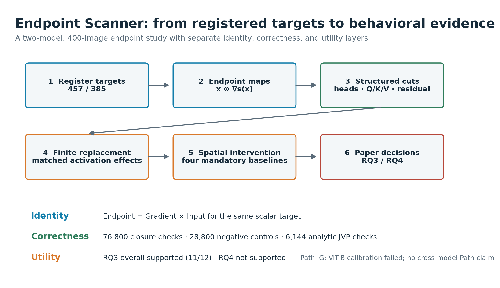
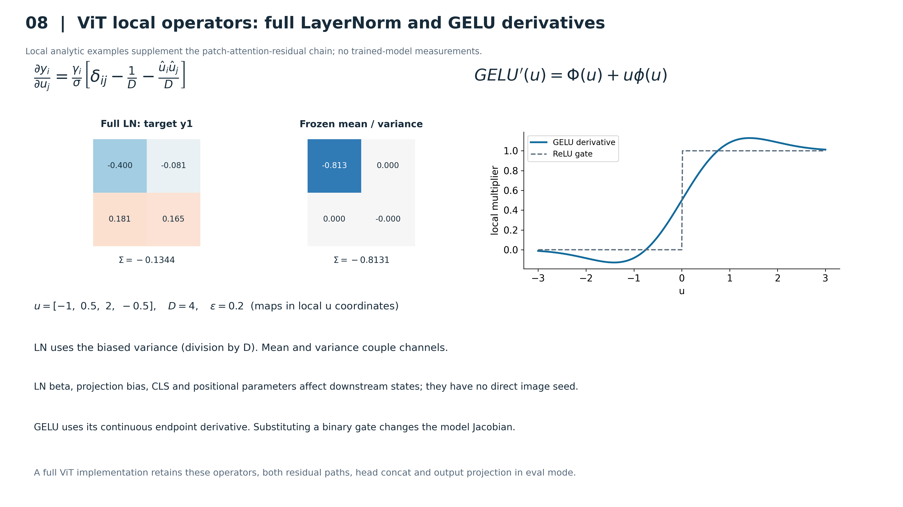
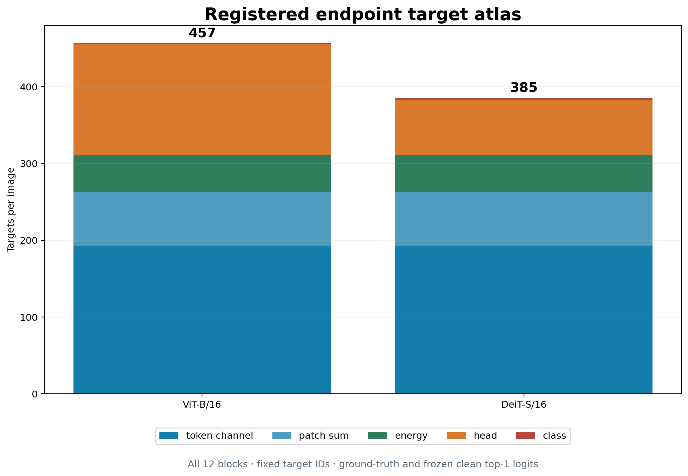
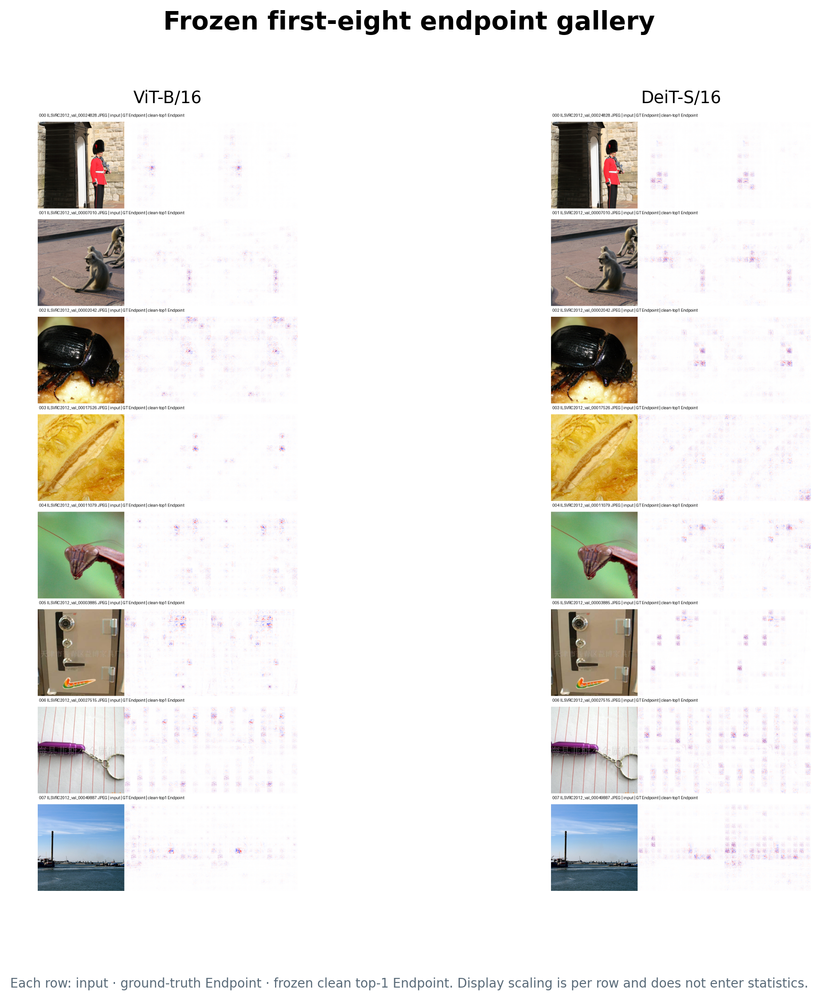
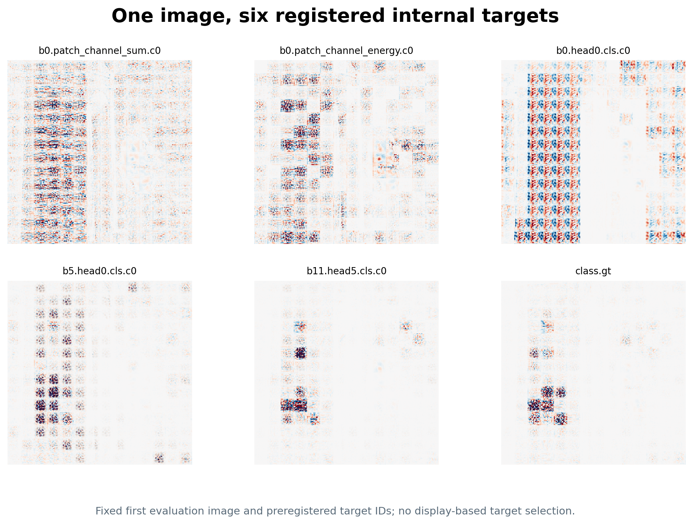
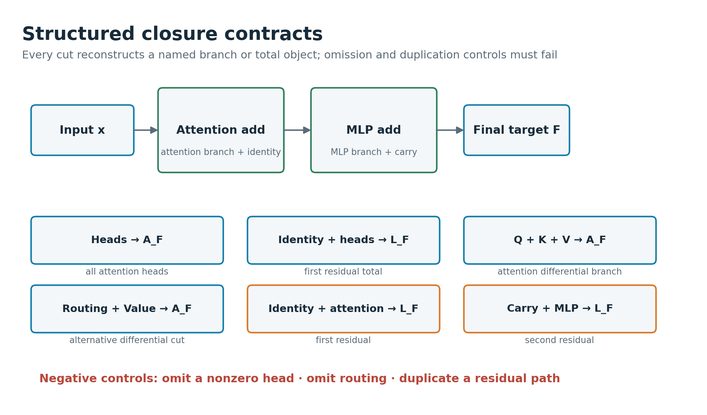
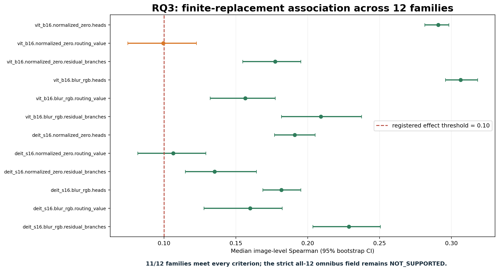
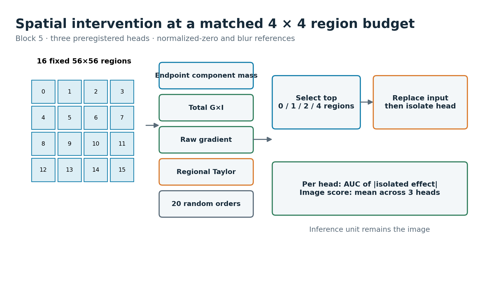
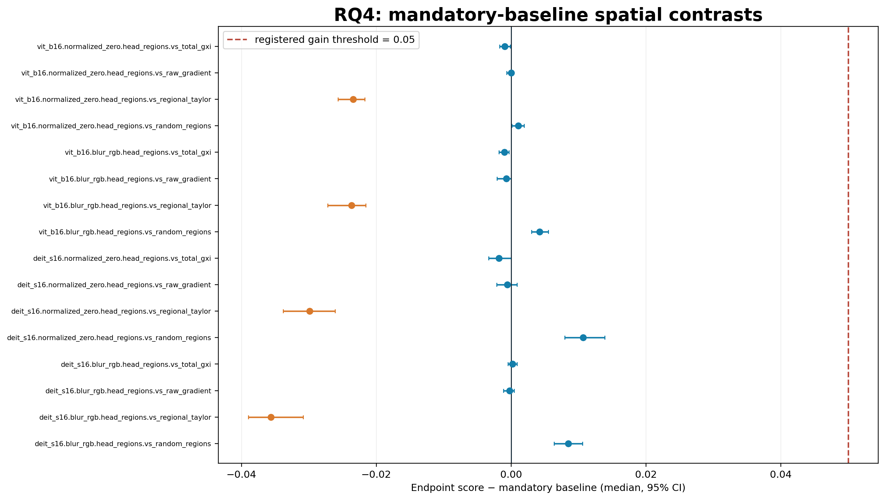
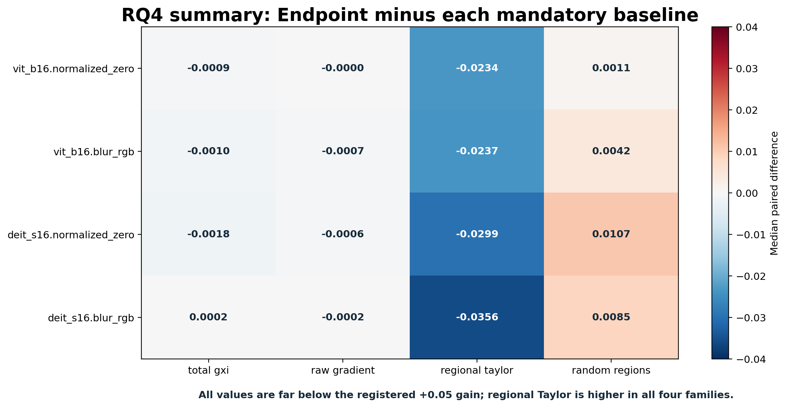

Figure 1 · Endpoint Scanner study overview

从注册目标、结构分解、有限 activation replacement 到空间干预与论文判定的完整研究链。Identity、Correctness 与 Utility 分开报告。

从注册目标、结构分解、有限 activation replacement 到空间干预与论文判定的完整研究链。Identity、Correctness 与 Utility 分开报告。

NNS-CNN、ViT Endpoint 与 Path 方法的 seed、Jacobian 和方法身份。

同一解析目标的终点图与路径积分图；非线性 attention 下二者不必相等。

原始 CNN 门控例子说明 Endpoint 使用当前 ReLU/MaxPool 状态。

Attention 的 Q、K、V 微分路径及其闭合关系。

Residual 输入边记账，避免遗漏或重复旁路。

单元、patch sum 与 energy 是三个不同标量目标。

Endpoint、baseline-relative endpoint 与 IG 的 seed 和坐标原点。

LayerNorm 与 GELU 的真实 Jacobian 不能用冻结统计量或二值门代替。

结构化切面把张量成分映回同一输入坐标并闭合到注册对象。

ViT-B/16 每图 457 个目标，DeiT-S/16 每图 385 个目标，覆盖 12 个 block 与类别输出。

冻结前 8 张 evaluation 图在两个模型上的 ground-truth 与 clean-top1 Endpoint 图。

固定第一张 DeiT 图像的六类注册目标，不按显示效果挑选。

E2 共完成 336,800 个 finite target evaluation，并报告完整 atlas 的实际耗时。

六种切面分别闭合 attention 分支或 residual total；负例必须失败。

76,800 项正向闭合通过，28,800 项遗漏/重复负例被拒绝。

固定第一张图、block 5、同一类别目标的真实结构成分图。

6,144 个 condition-scaled analytic JVP 检查全部在冻结边界内。

将同一个注册 component 替换为 reference activation，以有限 logit effect 检验 Endpoint mass。

RQ3 的 12 个 C4a family：11 个满足全部条件，一个临界例外。

唯一例外 0.099565 距 0.10 仅 0.000435，方向为正且 Holm 显著；RQ3 整体支持。

Endpoint mass 与预注册次级 predictor 同时报告；p_ref 等指标是描述性比较，不进入 C4a 门。

固定 4×4 区域、三个 head、两种 reference 和四个 mandatory baseline 的空间干预协议。

固定第一张 DeiT 图像的 total G×I、raw gradient 与三个 block-5 head component map。

固定单图的 isolated-head effect 曲线，展示各排序方法如何形成 AUC。

16 个 C4b baseline contrast 的中位差和 bootstrap 区间。

四个 family 均未达到 +0.05；regional Taylor 在四个 family 中都更高。

最终证据分层：Identity 和 Correctness 成立，RQ3 整体支持，RQ4 不支持，Path 比较不发布。